Працюємо над подоланням соціальних наслідків війни.
Про фонд
Благодійний фонд «Стабілізейшен Суппорт Сервісез» — українська благодійна організація, що з 2016 року допомагає долати соціальні наслідки війни та надає всебічну підтримку внутрішньо переміщеним людям. Ми надаємо гуманітарну та правову допомогу, здійснюємо ремонт пошкодженого житла, зміцнюємо систему соціального захисту та розвиваємо мережу Рад ВПО, започатковану фондом у 2019-2020 роках.
Хто ми →
станом на жовтень 2026 року
- людей отримали гуманітарну допомогу
- 543 370
- індивідуальні продуктові/медичні/гігієнічні набори/набори НПД було роздано
- 315 086
- об’єктів відновлено після пошкоджень різного ступеня
- 2 168
- людей отримали юридичну та соціальну допомогу
- 223 652
Що ми робимо?
Ми реалізуємо гуманітарні та соціальні ініціативи, що спрямовані на подолання актуальних викликів. Серед основних напрямків нашої роботи:
- Гуманітарна допомога постраждалим від війни• забезпечуємо базові гуманітарні потреби ВПО та мешканців прифронтових громад на підконтрольних Україні територіях,
• екстрено реагуємо на гуманітарні кризи,
• впроваджуємо довгострокові проєкти для подолання гуманітарних викликів.→
- Відновлення та розвиток громадРеалізовуємо ініціативи, які зміцнюють соціальну згуртованість, підтримуємо молодіжну участь у житті громади та сприяємо розвитку громадянського суспільства.→
- АдвокаціяАдвокатуємо права і свободи ВПО, репатріанток/тів і всіх, хто постраждав від війни, на регіональному та національному рівнях.→
- ПравопросвітництвоПідвищуємо обізнаність про громадянські права, гендерну рівність та демократичні цінності.→
- Підтримка Рад ВПОЗміцнюємо та розширюємо мережу рад, навчаємо нових учасників, створюємо методології для їх ефективного розвитку та роботи на благо постраждалих людей.→
- Підтримка системи соціального захисту населенняНадаємо інституційну, консультативно-методичну та технічну підтримку державним установам, що працюють у секторі соціального захисту, й посилюємо довіру до них.→
Напрями роботи
Гуманітарна допомога постраждалим від війни
Відновлення та розвиток громад
Адвокація
Правопросвітництво
Підтримка Рад ВПО
Підтримка системи соціального захисту населення
Гуманітарна допомога постраждалим від війни
Відновлення та розвиток громад
Адвокація
Правопросвітництво
Підтримка Рад ВПО
Підтримка системи соціального захисту населення
Гуманітарна допомога постраждалим від війни
Відновлення та розвиток громад
Адвокація
Правопросвітництво
Підтримка Рад ВПО
Підтримка системи соціального захисту населення
Гуманітарна допомога постраждалим від війни
Відновлення та розвиток громад
Адвокація
Правопросвітництво
Підтримка Рад ВПО
Підтримка системи соціального захисту населення
- Гуманітарна допомога постраждалим від війни
- Відновлення та розвиток громад
- Адвокація
- Правопросвітництво
- Підтримка Рад ВПО
- Підтримка системи соціального захисту населення
Ти можеш стати частиною змін